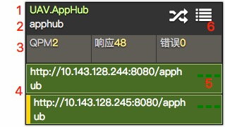
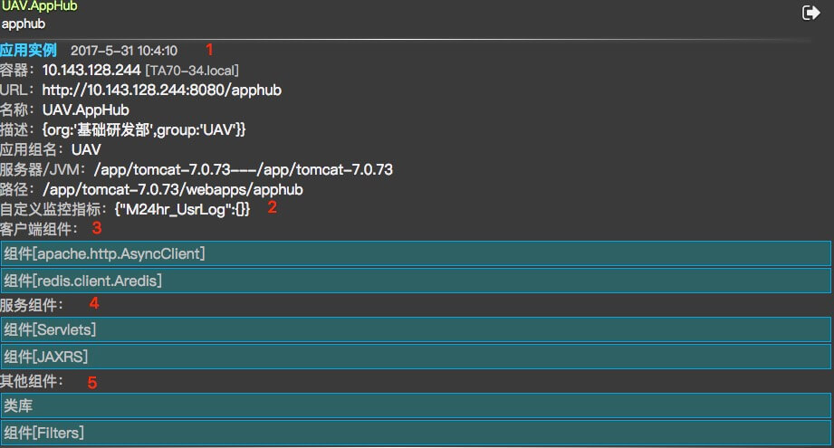

应用画像
监控对象
JEE应用：
基于JEE应用服务器（如Tomcat、SpringBoot）的应用
JSE应用：
任意Java应用程序
MSCP应用：
UAV监控代理程序和UAV相关服务程序
运行过程
通过UAV监控代理程序采集，周期15秒一次（监控图每个指标每分钟出现4个采集点）
应用集群

应用标签：
- JEE应用和MSCP应用的标签是绿色，JSE应用的标签是蓝色
- 可能是undefined，JEE应用需要在web.xml里面的 <display-name> 配置
应用名称
应用集群指标显示，可点击：
- JEE应用集群可视指标：QPM（每分钟吞吐量）、响应时间、错误数
- JSE应用集群可视指标：TPM（每分钟新启线程数）、HPM（每分钟Heap变化）
应用实例指标显示，可点击：
- 左边黄色块表示最近1分钟内有请求
实例指标状态显示：
- 从左到右：QPM、相应时间、错误数
- 每项最多显示三格并用颜色代表：低（绿色）、中（黄色）、高（红色）
详情按钮，可点击
详情显示

- 实例基本信息
- 自定义指标：
- 应用自己定义的指标
- 客户端组件列表：
- 支持http客户端：ApacheHttpClient
- 支持WebService客户端：JAXWS
- 支持数据源：MySQL、Oracle等任意jdbc数据源、Redis（JEDIS、LETTUCE、ARedis）、MongoDB（MongoClient）
- 支持数据库DataSource：DBCP、c3p0、Driud、Tomcat DataSource
- 支持消息中间件：RabbitMQ、RocketMQ
- 服务端组件列表：
- JEE应用：包括CXF、AXIS2、XFIRE、SUN JAXWS、Jersey、Wink、Apache HttpClient（同步/异步）、SpringMVC、SpringRESTService、Servlet（2.5/3.x）、Filter（2.5/3.x）
- MSCP应用：包括Http组件、定时任务组件
- 其他组件列表：
- 类库：该应用实例使用的jar列表
- JEE应用：包括Filter、Listener
- 日志：支持Slf4j、Log4j、LogBack、Java Logging